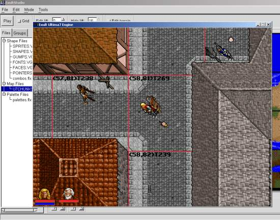
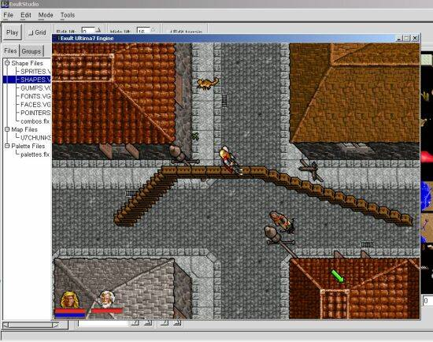
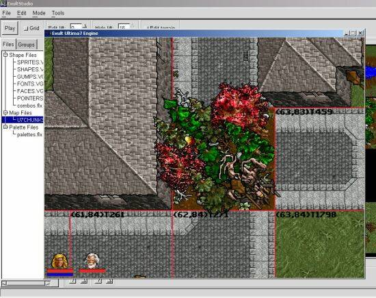

Exult Studio Documentation last changed: 08 August 2003(GMT)
The latest version of this document can be found here
0. Changes to the Documentation
0.1. - 08 August 2003
0.2. - 04 May 2003
0.3. - 28 October 2002
1. Introduction
1.1. What is Exult Studio?
1.2. About this Documentation.
1.3. Terms we use in regard to Exult and Ultima 7
2. Configurations
2.1. Installation
2.2. Running Exult Studio
2.3. Step-by-step instructions to run Exult Studio
2.4. What you can do at the moment
2.5. Settings in exult.cfg.
2.6. Command line options
3. Exult Studio basics
3.1. Description
3.2. Shape files
3.3. Map files
3.4. Palettes files
3.5. Groups files
3.6. The detail window
4. Exult Studio's menus
4.1. An overview
4.2. File
4.3. Edit
4.4. Mode
4.5. Tools
4.6. Tool bar
5. Basic editors
5.1. The shape editor
5.2. Creating Combination files
5.3. Custom Usecode
6. Egg editing
6.1. Explaining eggs
6.2. The different types of eggs
6.3. Add, remove and edit eggs
6.4. Properties of eggs
6.5. Placing a monster spawning egg
6.6. Schedules of Creatures
6.7. Jukebox, Sound Effects and Voice eggs
6.8. Usecode eggs
6.9. Missile eggs
6.10. Teleport eggs
6.11. Weather eggs
6.12. Path eggs
6.13. Button eggs
7. NPC editing
7.1. How to edit an NPC
8. Basic map editing
8.1. Learning the basics of map editing
8.2. Moving objects around
8.3. How to place objects from Exult Studio
8.4. Mark, delete, copy, make multiple objects
8.5. Making floating objects like bridges
8.6. How to change the frame of an object
8.7. How to change chunks (the big red outlined square)
8.8. How to make a structures consisting of multiple objects
8.9. More things you can do with Combos
8.10. Use the paint feature to quickly create a forest
9. Miscellaneous
9.1. Other tools that might be useful
9.2. Porting Exult Studio to other platforms
9.3. About this client/server stuff?
9.4. About this 'terrain-editing' stuff and why you can't just
drag objects to where you want.
9.5. What's next?
9.6. Known Bugs with the Win32 port
10. Credits
10.1. Thanks
| 1. Introduction |
|---|
| | | 1.1. What is Exult Studio? | |
Exult is not only capable of playing Ultima 7 but it is also intended as
an engine in the style of the one used by Ultima 7. Exult Studio started it's life
as a simple map editor but it is slowly developing into a full fledged editor
enabling users to create a new game. Tristan came up with the cool name!
The main purpose of Exult Studio is the ability to create an entirely original
game world without using the original Ultima 7 data files. Its semi-possible
already but still requires a lot of work. Not the least of which is that an entire
games worth of art needs to be created.
Editing a copyrighted game may or may not be allowed. Please exercise caution especially
if you want to distribute your changes.
| | | | 1.2. About this Documentation. | |
Exult Studio is work in progress. How things work may change and new features are
added very frequently. Due to that the maintainers (Jeffrey, Dominus) of this
documentation may not have been able to update it. As we do not have an official
release yet this documentation refers to recent snapshots.
This guide is what we hope will be an ongoing effort to provide up to date and
in-depth information on how to get the most out of Exult Studio. Accuracy is an
essential part of this guide. If you find something that could be clearer or doesn't
seem worded properly please tell us, we will be happy to change this guide. Tips and
tricks by other users will be appreciated as well and will of course be credited.
| | | | 1.3. Terms we use in regard to Exult and Ultima 7 | |
Of course the terms explained in ReadMe are
also used in this Documentation but we will list them along with the terms
that additionally need to be explained for the usage of Exult Studio
- tile:
8x8 pixels
- chunk:
16x16 tiles
- superchunk:
16x16 chunks
- world:
12x12 superchunks
- NPC schedules:
NPCs can have schedules which make them do certain things at certain times.
- BG, SI, FoV
or SS:
we refer to "Ultima 7: The Black Gate" as BG and to "Ultima 7: Serpent Isle"
as SI. The add-ons "Forge of Virtue" and "Silver Seed" are called FoV and SS.
- eggs:
these are trip-wires that cause monsters to spawn, execute scripts, play music,
change weather, trigger traps, teleport when you get near them.
- flex files:
or flexes are used by the original to store the data files.
Also when you choose not use compressed save games (see save_compression_level in
ReadMe) our save games are also "flexed".
- gumps:
the windows used in the game interface for containers, characters, menus, etc..
- paperdoll:
when pressing
'i'
you get the inventory display. It's the picture of your
characters body (or the bodies of your party members) onto which you can drag all
kinds of equipment. The way this is displayed in SI is what we call
paperdoll. We integrated this for BG as well.
(see FAQ).
- shapes:
shape files are the format used for storage of all graphics elements (from UI buttons
to terrain features) of the games Exult supports. Shapes may contain one or more
frames (a frame is a single image).
- snapshot:
see FAQ.
Please note that our documentation usually refers to the latest snapshot.
- usecode:
that's the scripting language that drives all of U7 (conversations, objects...).
- Exult data directory:
that's the directory where Exult stores its data files (exult.flx, exult_bg.flx and
exult_si.flx).
|
| 2. Configurations |
|---|
| | | 2.1. Installation |
- You need Exult and you need to install it properly
(see ReadMe). Also make sure that
you are using the latest snapshot of the 1.1.x branch of Exult.
Exult Studio only works with the latest snapshot, not the latest release.
- For U*ix platforms you need to build Exult Studio from the source avilable from our
source snapshot at http://exult.sourceforge.net/download.php.
You will also need the GTK+ library installed as well as
libglade.
- For Win32 platforms (Win9x,ME,2k,XP) you need to download
http://exult.sourceforge.net/snapshots/2.0/ExultStudio.exe
and install it in the same directory where you installed Exult.
| | | | 2.2. Running Exult Studio | |
You can run Exult Studio all by itself, but it isn't useful that way,
as it uses Exult as a server. What you really want to do is:
- Put 'exult_studio.glade' in the Exult 'data' directory.
- Be sure 'exult_studio' is in your path. (on Win32
'exult_studio.exe' needs to be in the same directory as exult.exe)
- On U*ix platforms you need to be running Exult on X.
- Run Exult in windowed mode (not fullscreen).
- Press 'alt+ctrl+m' to go into 'map-editor' mode. If all is set
up correctly, exult_studio will start up, and will have a list of files
on the left side of its window (you need to have cheats enabled in Exult,
see the ReadMe).
Starting up one or the other separately will reconnect them:
- If Exult isn't running, start it up. Then, in Exult Studio,
use the 'File' menu to choose the static directory (for the game you're
playing).
- If Exult Studio isn't running start it up with:
exult_studio -x (path to dir containing exult_studio.glade) -gGAME
(GAME is the same string (ie, 'blackgate') that we use in .exult.cfg or that
you've given to your own game).
You can also reconnect by selecting File-Connect in Exult Studio's
menus.
| | | | 2.3. Step-by-step instructions to run Exult Studio | |
The above instructions may still be too technical for everybody.
You have to make sure all these steps are taken care of before you're going to get
very far with your world building.
- While it is not explicitly needed it is usefull to have a working copy of either
BG or SI properly installed onto your computer.
- Next, you need to have the Exult 1.1x snapshot and the SDL mixer installed properly
onto your computer and working correctly. If you are currently playing either BG or SI
on your machine this is probably done right. To make sure you have the correct version,
ensure that it says 1.10 CVS during Exult's start-up screen.
- You need to make sure the newest version of Exult Studio is installed properly onto your
computer as well. Exult Studio should be installed in the same directory as the Exult 1.10x
snapshot.
- You need to set up the path for the patch to save any changes to existing
games. See 2.4. What you can do at the moment on how to change exult.cfg accordingly.
- In order for Exult Studio to work properly, you need to have Exult running in windowed mode.
If you can see your desktop while playing, then you're doing it right.
- Make sure you have Cheats enabled. This can be enabled int eh Gameplay options of the Game
menu.
- While running Exult in windowed mode, hit
'ctrl+alt+m'
to enter map-editing mode.
Exult Studio should open up if you did everything correctly. In map-editing mode the world is
frozen, but you are still able to move your characters around in order to place objects.
You're now ready to start your world editing. You should be seeing something like this:

| | | | 2.4. What you can do at the moment | |
With the latest source you can
- browse shapes in the main window.
- drag a shape from the shape browser to Exult, and that
object will be placed in the game.
- edit an 'egg' by double-clicking on it. An edit box
should appear.
- create a new 'egg' using the pull-down menu in Exult Studio.
In the Egg edit box, after you hit 'Apply', you'll be prompted to
click in Exult where you want the egg to appear.
- if editing a 'monster' egg, you can set the monster by dragging
the shape from the browser to the area that displays the monster.
- edit an NPC by double-clicking on it, and also create a new
NPC using the pull-down menu. Attributes, flags, and schedules can
all be viewed and modified.
- edit other objects' position and quality by double-clicking on them.
- browse the 'u7chunks' file, and drag them into Exult to change
the terrain. In this browser, you can also create new terrains and
modify their order.
- select a chunk, choose 'Paint with chunks' from the 'Mode' menu, and then
paint terrain with that whole chunk.
- edit a 'terrain' (stored in 'u7chunks') by clicking the "Edit
terrain" checkbox in Exult Studio. This is a special mode where
dragging with the left mouse button 'paints' the currently-selected
shape (generally one of the flat tiles near the top of the shapes
browser). Note that a 'terrain' is generally used in multiple places
in the map and changing it in one place changes it in all the others as well.
- save the map using Exult Studio's "File-Save map" pulldown menu.
In order to avoid writing over files inadvertently, the files that
would normally go into the 'static' directory, will, instead, go into
a 'patch' directory that you specify in your 'exult.cfg' file. Here's
an example for editing BG:
| <game> | | <blackgate> | | <path> | | blackgate | | </path> | | <patch> | | blackgate/patch | | </patch> | | <title> | | blackgate | | </title> | | . | | </blackgate> |
Exult will also read files from 'patch' if it exists on starting a new game.
In any mode, you can add the currently selected shape by shift-clicking..
| | | | 2.5. Settings in exult.cfg. | |
You can change the settings of Exult Studio either with the preferences dialog or
via exult.cfg. Those settings are:
| <config> | | <estudio> | | <main> | | <width> | | 640
| ** width of the program window
| | </width> | | <height> | | 400
| ** height of the program window
| | </height> | | </main> | | <default_game> | | gamename
| ** default game to edit (games must be specified in
<game> part of exult.cfg)
| | </default_game> | | <image_editor> | | gimp-remote -n
| ** command that calls the image editor. Only useful on U*ix
platforms for now.
| | </image_editor> | | <background_color> | | 0
| ** background color for the shape-chooser. Use the preference
dialog of Exult Studio for this.
| | </background_color> | | </estudio> | | </config> |
| | | | 2.6. Command line options | |
Exult Studio offers some "hidden" command line options:
- -gGAMENAME
specifies GAMENAME and Exult Studio will read the game base directory from exult.cfg.
GAMENAME can be chosen from the games specified in <game> part of exult.cfg.
- -xDIRECTORY
tells exult_studio to look in DIRECTORY for its user-interface specification
(exult_studio.glade).
You can enter the full path (e.g. "exult_studio -xc:\exult\data") to the glade file
or you can use the relative path (e.g. exult_studio -x./data).
This option is only useful to developers who want to edit exult_studio.glade
themselves.
|
| 3. Exult Studio basics |
|---|
| | | 3.1. Description | |
Once Exult Studio runs correctly , a tree of game files is displayed to the left of
the main window, while the currently selected file is viewed in detail to the right.

The types of files Exult Studio supports are described next.
| | | | 3.2. Shape files | |
Shapes are the basic graphical elements of the game. Each shape has one or more
frames that typically represent different states or angles of the same thing.
E.g. a button shape could have frames for pressed, and released; a character
could have frames depicting her sitting, standing up facing one way, or another,
swinging a punch, etc.
When a shape file is selected, the right part of the main window will show frame
zero of the shapes contained therein. Shapes can be selected by clicking, which
will show there number, number of frames, and name if known. Other frames can be
viewed by changing the frame number.
When the selected file contains shapes that have names in their info you can also use
the find option to find shapes that have that name (e.g. in shapes.vga you can search
for 'door' to find all shapes that have door frames). You can search down or up in the
selected file.
When viewing shapes you can press the button 'Frames' in the lower right corner of
Exult Studio to show all the frames of a shape next to each others.
Shape files also have a special right-click-menu. See 5.1. The shape editor.
Typicall shape files are:
- Sprites.vga
displays all the animations that can be used to overlay the screen.
- Shapes.vga
displays the objects that can be placed onto the world.
- Fonts.vga
displays all text graphics used throughout the game.
- Faces.vga
contains all of the graphics for conversation pictures..
- Pointers.shp
contains the graphics for the mouse cursor.
- Combos.flx
where custom made combos will be stored.
| | | | 3.3. Map files | |
These files contain so called chunks that serve as templates in the final map.
The chunks of the selected map file are shown in the right part of the main window.
When a chunk is selected you have two options below:
- Locate
shows places in the Exult game where that chunk is used.
- Move
Moves a chunk in the chunk file. This does not effect the display on the map.
Right clicking on a chunk gives you another two options
(also the File-save/revert option):
- New...
Empty
Creates a new chunk. Drag the new chunk onto the game and edit it by dragging
shapes on it.
Duplicate
Duplicates a chunk. Drag the duplicate chunk onto the map to edit it.
| | | | 3.4. Palettes files | |
The palettes used by a game are stored in the files listed there.
When you select a palette with number zero is shown in the right part of the main
window. Other palettes are shown by selecting another palettes number
When a palettes file is selected you have some options:
- Edit
New/Remove adds or deletes a palettes.
- Move
Moves palettes in the file.
- File
Import
Overwrites the current palettes with palette text file.
Export
Exports the current palette to a text file.
Right clicking on a chunk only gives you the default File-save/revert option.
| | | | 3.5. Groups files | |
Editing a game can become quite cumbersome when you have to choose between a lot
of shape files containing several frames. To make this task easier we have
implemented so called groups to groups several shapes together. For example you can
group all shapes containing door frames together in a group called 'doors'.
For this you have to select Groups and create a new group by writing the name in the
lower part of the window and then click 'add'. You now have the option in the Shape
Menu to add a shape to this group.
When you double-click a group the group window opens that shows the shapes in the group
and by selecting a shape you see the shape info.
You also have some options to edit the group:
- Move
Moves the shapes within the group.
- Remove
Removes the shape from the group.
- Name
Changes the name of the group.
- Frame:
select the frame displayed.
- Frames
shows all the frames of a shape next to each others.
- Find
Lets you search for a specified shape in the group.
- Locate
Locates the selected shape inside the game. It locates only the shape not a
specific frame.
| | | | 3.6. The detail window | |
Below the detail windows you have the following options:
- Frame:
select the frame displayed.
- Frames
shows all the frames of a shape next to each others.
- Find
Lets you search for a specified shape in the group.
- Locate
Locates the selected shape inside the game. It locates only the shape not a
specific frame.
Right-clicking on the detailed view of any file gives these options
(along with other options specific to the file):
- File...
Save
Saves all the changes you made to it without saving any other file.
Revert
Discards all changes..
|
| 4. Exult Studio's menus |
|---|
| | | 4.1. An overview | |
Before you get started with constructing your own little world its important to know
a little bit about the structure of Exult Studio and the arrangement of menus. An
overview of some of the Exult Studio menus follows.
| | | | 4.2. File |
- New Game...
This lets you begin the work on a new game. Jeff wrote an extensive description of
how to use this and how it works.
See
New Game manual.
- Open Game...
Choose the Game directory of the game you that you have been working on.
- Save all
'Ctrl+S'
Saves map, shape info and groups you edited. Saves all the changes you've made to
the world you have been working on. If you're happy with your changes do this
before you quit or all work will be lost.
- New...
Shapes file...
Lets you choose the directory where you want to create a new vga file and requires
you to enter a name for it (e.g. mygame.vga).
Single shape file...
Lets you choose the directory where you want to create a new shape file and requires
you to enter a name for it (e.g. mygame.shp).
- Save...
Map
Saves the map of the edited game.
Shape info
When you right click a shape in a vga file you can change the info of the shape.
This saves this changed info.
Groups
You can "bundle" shapes of vga files into groups to make world building easier.
These groups get saved with this option.
Combos
This saves the combination files.
- Reload...
Map
'Ctrl+R'
Reloads the map. All changes made since the last save get discarded.
Usecode
Very useful when you edit the usecode of a game or add new usecode to an
existing game. Normally this would require a restart of Exult.
- Connect
Connects Exult and Exult Studio if one of them had to be restarted.
- Preferences
Image Editor Command:
This executes the chosen image editor when you want to edit a shape when you
right click it.
Image-Edit Filetype:
Choose which filetype gets executed with the above chosen image editor.
Default Game Name:
Choose the game Exult Studio opens by default. Use the name specified in exult.cfg.
Shape List Background:
Sometimes the default black background may make certain shapes hard to see. Choose
a different background color here.
- Exit
'Ctrl+Q'
Exits Exult Studio.
Note that the default location for saving and creation of new files is the STATIC directory
of a game if there is no PATCH directory specified. See 2.4. What you can do at the moment.
| | | | 4.3. Edit |
- Cut
'Ctrl+X'
Removes the selected object(s) and puts it into memory.
- Copy
'Ctrl+C'
Copies the selected object(s) into memory.
- Paste
'Ctrl+V'
Shows the crosshair cursor and copies the object(s) from the memory into the game
where you left click the crosshair.
- Properties...
Shows the properties of the selected object. If more than one object is selected
it shows the properties of the last selected object.
Only NPCs and eggs show different properties than if you select Basic properties.
- Basic properties...
Shows the properties of the selected object. If more than one object is selected
it shows the properties of the last selected object.
- Create egg...
Create or edit eggs with this.
See 6. Egg editing for detailed information.
- Create NPC...
Create or edit NPCs with this.
See 7. NPC editing for more information (not yet there).
| | | | 4.4. Mode | |
It describes how the mouse behaves inside Exult when map-editing.
- Move
This is the normal mode where you can drag things with the mouse, or single-click
to identify objects. In this mode you also select objects. A selected object is
shown with a red outline. To select more than one object hold down
'Ctrl'
while selecting. Move the selection
'Ctrl+arrow'
(x,y coordinates) and
'Ctrl+page'
keys (z coordinates).
- Paint
a single-left-click inserts the last-selected shape from 'shapes.vga', and dragging
with the left-button inserts that shape in every tile (so you'd probably only want
to do this with 8x8 flat shapes). Also, in 'Paint' mode, the footprint at ground
level is shown (though this may be changed in the future).
If you hold the alt key down, random frames from the currently-selected shape will
be painted (handy for grassy areas).
- Paint with chunks
works the same as the normal Paint mode only with chunks. Left-clicking the mouse
paints the current chunk onto the map.
Take a look at 8.7. How to change chunks (the big red outlined square).
- Pick for Combo
Picks objects for a new combo file. Double-left-click to add objects to the combo,
single-left-click to identify object. See 5.2. Creating Combination files
Note that you can only drag objects in the game window when you are in "Move" mode.
| | | | 4.5. Tools |
- Locator...
'Ctrl+L'
shows where the current game window is within the entire map, and lets you move
the view by double-clicking a location or by dragging the little box
- New Combo..
Creates a new Combo file. See 5.2. Creating Combination files.
- Unused shapes...
searches the entire world being created to see if any of the shapes in shapes.vga
are not in use. Have patience when doing this and treat the results with caution.
- Compile Usecode...
Compiles the usecode script usecode.uc in the patch directory
(see 5.3.)
| | | | 4.6. Tool bar |
- Play
This is the same as pressing
'Alt+Ctrl+M'
in Exult. It exits the Map Edit Mode
and lets you play the game. By pressing it again you enter Map Edit Mode again.
- Grid
Shows a grid of white lines in the game window for better control on placing objects.
- Edit lift:
Changes the lift of a selected object in the game window. Lift means the distance of
an object from the ground.
- Hide lift:
Hides objects that are above the chosen height.
- Edit terrain
See 2.4. What you can do at the moment. Note that a terrain is used in multiple instances of the
map and changing it in one place changes it in all the others as well.
|
| 5. Basic editors |
|---|
| | | 5.1. The shape editor | |
When you right click on a shape in the Shape browser (e.g. Files-Shapes.vga) you
get some options of how to edit the shapes.
- Add to group...
If you set up groups you can add shapes to them with this.
- Info...
Displays the information of an object. You can change a lot of stuff there and
caution is advised. The information is saved by
4.2. File.
- Edit...:
Brings up your image-editor on the chosen frame. When you save
in the image-editor, ES will read the changes back within 5 seconds. This is
especially convenient if you have 'gimp-remote', as it will open a window for
the frame in an already-running gimp.
- Edit tiled:
This is only for 'flat' (8x8) shapes. It forms an image
from all the frames and brings it up in the image-editor. This is really
handy for making lots of terrain frames like grass. A dialog lets you choose
the dimensions.
- New frame:
Creates a new frame after the currently-selected one. The 'insert' key
also does this (and the 'del' key deletes a frame, though it's
buggy if there's just one frame left).
- New shape:
Gives you a dialog for choosing the shape #, as well as the
initial # of frames.
You can also create a new font shape from TrueType or Type1 font files.
It's mainly a convenience for someone creating a whole new game, as their
only single-colored. Maybe in the future we'll have some functions to
create two-colored fonts like the main one in U7, although it might take
hand-editing to make the letters look that nice.
- Import/Export frame:
Let's you import a single frame from a .png file or
export to a .png.
Note: Edit... doesn't work on Windows system. It stores
the shape as PNG file in GAMEDIR/itmp/ (e.g. blackgate/itmp). If you manually
open the file with an image editor of your liking and then save it, ES doesn't
read the changes back.
| | | | 5.2. Creating Combination files | |
Create 'combination shapes', like a fence or an entire roof by selecting
"Tools-New Combo" (see 4.5.). When you run Exult Studio the first
time a file called combos.flx gets automatically created in the "Patch" directory.
Choose the 'Pick for Combo' choice in the 'Modes' menu, and an empty window should
pop up. In the game window, double-click a group of objects, and they should appear
in the window. You can then select an object there and tweak its position. When you
are done hit apply and the combo gets temporally saved until you hit "Save all" or
"Save - Save map".
You can drag and drop combinations into the game window.
| | | | 5.3. Custom Usecode | |
As hinted at (see ReadMe) Usecode is actually what runs Ultima 7
and therefore any game created with Exult Studio.
As of yet we do not have a Usecode editor/debugger. So writing your own Usecode is not
that easy.
For an example of how Usecode may look like download our experimental patch for BG at
http://exult.sourceforge.net/snapshots/patch.zip.
In that zip you'll find a readme.txt which tells you how to run it.
You will also see two files called usecode.uc and usecode.
Usecode.uc is the usecode script that will help you understand our usecode language.
When you run ucc (see 9.1.) with that file
(e.g. "ucc -o usecode usecode.uc") you will get the file called usecode. This file
'usecode' should be the same as the one in the zip file.
Someone does have to write extensive documentation for this but I (Dominus) am not
really up for that task.
Pertex has written some documentation at http://www.sophen.de/exult/
that might be able help you.
|
| 6. Egg editing |
|---|
| | | 6.1. Explaining eggs | |
An egg in its simplest form is an object that is placed in the world, but is
invisible to a normal user. When the player meets the requirements of an egg,
it causes the egg to become activated. Eggs can activate anything from monster
spawns, to changes in the current music, to the activation of custom usecode. You
may want to place the eggs in map-editing mode because eggs don't activate in this
mode. Then switch off map-editing mode to test how your egg will work during game
play.
| | | | 6.2. The different types of eggs | |
Currently Exult Studio supports the following types of eggs (more details follow):
- Monster(spawning)
allows for the creation of a creature when certain conditions are met, usually
when your character gets within a certain distance of the egg.
It also allows for the creation of simple objects like walls or furniture to
appear when the Avatar gets near. This could make for some interesting effects.
- Jukebox
sets the background music when the character enters a certain area.
- Sound Effectand Voice
will play a selected sound or voice when the character meets the required values
set in the egg creation menu.
- Usecode
allows for the activation of custom usecode when an egg's requirements are met.
The creation of custom usecode is discussed (though not in depth) at
5.3..
- Missile
create interesting objects like flamethrower traps.
- Teleport
transportthe avatar anywhere on the map when certain conditions are met.
- Weather
temporarily set the in-game weather.
- Path
set the destination of a teleport egg to a specific object.
- Button
is used to activate eggs in the vicinity that are set to external
| | | | 6.3. Add, remove and edit eggs | |
The most convenient way to create an egg is to select Create new egg
from the edit menu. This will pop up the Exult Egg window. Here you
can select the type of egg you wish to create and the properties you are going to
give it. When you are happy with the egg press apply and then enter
Exult and place the egg wherever you like. To remove an egg, select it while in
map-edit mode and press
'ctrl+x'
to cut the egg. ou can still paste it
elsewhere if you like. To edit an egg, double click it in map editing mode. This
will bring up the egg window where you will be able to change an existing egg's
attributes.
| | | | 6.4. Properties of eggs | |
Before you select the type of egg you want you can edit basic properties of eggs.
These are:
- Probability
of the egg being activated. By giving an egg a probability of 100 you can ensure
that whenever the requirements necessary to make an egg activate are met, the egg
will activate. With a probability of 0 nothing will ever happen when the egg's
requirements are met. A probability anywhere between 0 and 100 will cause the
activation of an egg to be a random event.
- Distance
allows you to set how far a character needs to be from an egg in order to activate
it. Each distance unit is equal to one tile (8x8 pixel) of the map.
- Criteria
is very important as it sets what needs to be done to activate the egg. The
options are:
Cached in - An egg with this characteristic is activated when
the chunk it is on is loaded into memory. This usually happens from several screens
away.
Party near - causes an egg to be activated whenever the player
controlled character or any of his party members wander within the area specified
by the distance option.
Avatar near - exactly the same as party near except only registers
where the main character is moved, ignoring actions by the party members.
Avatar far - Its like Avatar near except with a twist. This
property allows you to walk into the area specified by the distance property but then
as you leave the area the egg will be activated as you distance yourself from it.
Can be great for sneak attacks from behind.
Avatar footpad - In this case the distance property is ignored and
the Avatar has to physically step onto the egg.
Party footpad - This option is identical to the Avatar footpad option
except if either the main character or one of his companions stumbles onto the egg it
will be activated.
Something on - This egg is activated whenever an object is placed
within the area specified by an egg.
External - Eggs set to the external characteristic will be activated
by button eggs in the vicinity.
- Flag
final attribute you can give an egg to determine whether it will be activated or not.
As a note you can mix and match flags, you can set an egg to nocturnal once only or
nocturnal auto-reset.
Nocturnal - Any egg with this setting will only be activated during
the nighttime. Great for setting the spawning of creatures of the night, or giving
some nice night time music.
Hatched - This creates an egg that has already been activated. It
is inactive and will not do anything.
Once-Only - Any egg with this flag applied will only hatch once and
then disappear from the game world.
Auto-reset - Eggs with this flag attached will continue to activate
every time the conditions set in the egg menu are met.
| | | | 6.5. Placing a monster spawning egg | |
The first thing you want to consider before placing monster spawn is some of the basic egg
attributes. What probability do you want? What distance? Will it be a nocturnal creature?
Next you have to set the monster specific egg attributes. The first question is probably
what type of monster you want to place. You can now switch to the main Exult Studio window,
select shapes.vga and choose a shape. Drag and drop this on the "Exult Egg" window. Frame #
isn't overly important when placing a monster, but for placing an object it can be very
important. Enter these attributes into their respective form. You next have to set the
monster's schedule. The various schedules that are important for a monster spawn are
discussed next. You also have to set the spawned monster's alignment.
Any creature set to a neutral alignment will ignore the Avatar and friends, following their
schedule until attacked. Any creature set to hostile will immediately attack the Avatar if
you get too close. Using the friendly alignment naturally evil creatures such as ethereal
monsters will still attack, but good or neutral characters such as stone golems will continue
out their assigned schedule if given the friendly alignment.
As a final monster spawn option, you can set the number of creatures you want to appear using
the count option. You can set anywhere from 1 to 31 monsters. When you're finished setting
the egg how you want, simply press "Apply" and place the egg on the world map.

| | | | 6.6. Schedules of Creatures | |
When setting a monster spawn you will most like want to use one of the following schedules.
- Horiz. Pace
Any creature given this schedule will pace back and forth in a horizontal manner. Great
for guards and sentries
- Vert. Pace
Same as the horizontal pace, except in a vertical direction.
- Hound
Any creature given this schedule will slowly follow the main character wherever he goes.
Good for creatures that won't take no for an answer.
- Stand
Creatures given this setting will stand in one place until given a better reason to move.
- Loiter
Creatures given this setting will wander aimlessly. They will move in random directions
a bit at a time.
- Wander
Any creature given this setting will slowly move around a fairly large area.
- Wait
Creatures given this setting will complacently stay in one place.
- Shy
Creatures given this setting are afraid of the main character and will slowly wander away
from the Avatar.
- Waiter
Give a creature this schedule and watch him run back and forth around a crowded area like
he has a purpose.
- Graze
An awful lot like loiter except the character seems to stay a little more to one area.
- Duel
Doesn't do a whole lot by itself, but put two neutral creatures with these settings
beside each other and its rumble time. This also works by placing them near training
dummies or archery targets. For an extra laugh place 10 spawns each set for 31 guards
to appear in duelling mode.
- Patrol
A creature given this setting will very slowly wander from place to place.

| | | | 6.7. Jukebox, Sound Effects and Voice eggs | |
Using these eggs couldn't be more straightforward, select the sound effect, music score,
or recorded digital voice you desire and then place them onto the map. When a character
activates the egg they begin to play. You can set music and sound effects to play on a
continuous loop for continuous effects such as water fountains or short pieces of
background music that you don't want to quit until a new music egg is triggered.
In the game window you can test and find out the # of the audio by pressing
'Alt+1'
.
| | | | 6.8. Usecode eggs | |
Usecode eggs have many different functions that will be discussed later. The important
thing to remember about the usecode egg menu is that function number is where you insert
the hex value of the usecode function that this egg is going to execute.
| | | | 6.9. Missile eggs | |
When you place a missile egg, the first thing you have to set is the egg's activation
attributes. Do you want an egg to activate when the Avatar is near a certain spot, or should
someone have to directly step on the trap?
To choose the type of missile you want to shoot from your trap, select shape number 1 for a
fireball that doesn't do damage, 3 for a lightning bolt, and 6 to shoot arrows. Select shape
9 for a fireball that actually does damage. You can also set the direction you want the trap
to fire when it is activated, you can choose any of the 8 cardinal directions.
You can also use the delay timer to set how steady you want the stream of projectiles to be.
1 makes a constant stream of projectiles, while a value of 10 makes for the occasional danger.
Don't set the timer to 0 seconds, Exult REALLY doesn't like this.
Using these options you can make some pretty dangerous obstacles for the Avatar to avoid.
Note: Shape numbers assume you are using either BG or SI data. When making
a new game you can set weapons info of shapes yourself and choose which shape numbers are
used by each weapon.

| | | | 6.10. Teleport eggs | |
The primary purpose of the teleport egg is to simply move a character from one place to another
instantly without forcing them to walk there. Think of any dungeon teleporter that moves you
from one place to another.
The teleport egg has two primary modes. The first mode possessed by the teleport egg is to
choose the location that the party will be warped to by specifying a location on the over world
map using x and y co-ordinates. If you place an egg on the map and a character meets the
criteria specified by the egg they will be whisked away to the x and y coordinates set by the
egg. This option can't be used to move your character onto roofs because there is no z option
provided.
To switch to the other mode of teleporting, press the use coordinates button.
This directs the teleported towards a numbered path egg. By giving a path egg a unique number
and then placing it on the map any teleporter set to this egg will transport the player there.
The advantage of teleporting using a path egg is you can teleport your character onto the second
floor of a building if the path egg is placed up there.
| | | | 6.11. Weather eggs | |
There are two attributes of the weather egg that one needs to worry about.
- Weather
The most important attribute as this sets the effect you can expect when an egg
is activated.
Halt - Halts and current weather and set the world to a pleasant sunny
default.
Storm - Lots of thunder and lightning and the world darkens.
Cloudy - Some rain, not a lot else going on
Magic storm - Lots of thunder and lightning and the world darkens. As
well this type of storm eliminates the character's magic casting abilities while the
storm is in affect.
- Duration
sets the how long the chosen weather will last. The time is measured in game time and can
last up to 255 minutes.
| | | | 6.12. Path eggs | |
The path egg is useful for placing an individual teleport location by hand. Give the path egg
a unique number and then direct a teleport egg towards it. If the person steps on a teleporter
set to the same number as the path egg, they will be teleported there.
Note that it only works up to a distance of 256 tiles in each direction (in a square, not a
circle). It also doesn't world-wrap, meaning a teleport egg at the far east edge won't find
a path egg at the far west edge.
| | | | 6.13. Button eggs | |
The button egg has the interesting ability to activate all eggs in the immediate vicinity that
are set to external. You can set the area around the egg that will be affected by increasing
the distance setting, keeping in mind that each distance setting is equal to 1 tile (8x8 pixel).
|
| 8. Basic map editing |
|---|
| | | 8.1. Learning the basics of map editing | |
The first thing one will probably want to do once they have Exult Studio running is to begin
creating their own little world. The first step towards this is learning how to move objects
and chunks, and placing items from Exult Studio into the game world. And the best way to
learn is by using an existing game like BG or SI.
| | | | 8.2. Moving objects around | |
Perhaps the simplest way of making your world truly unique is to start out by moving existing
structures around. Move is the default option in Exult Studio, but to ensure you are in move
mode select it from the mode menu. You know you are in map-editing mode when a red grid is
highlighted across the world. You can select any object (notice the red highlighting of
selected objects) with the mouse and move it around. This works using a simple drag and drop
approach. Simply grab a tree with a right click and place it on the other side of your viewing
area. The only thing you can't drag and drop are chucks, which are the large ground sections
mapped by the red grid system. If you want to place one object on top of another, just drag it
on top and release. If the object can be supported in that position it will stay there. For a
brief guide on placing an object that won't have support, but will be floating see further down.
You can also change an object's x and y coordinates by selecting the object and pressing
'ctrl+arrow keys'
. An object's z coordinate can be changed by selecting the object and
pressing
'ctrl+page up'
or
'ctrl+page down'
.
| | | | 8.3. How to place objects from Exult Studio | |
This could not be simpler in Exult Studio. Simply select a shape from the shapes.vga menu and
drag it into Exult. In Windows I personally prefer to drag the item onto the taskbar, hovering
over the Exult window, wait for the window to switch and then place the item. You will get a
green grid that will show you exactly where you can expect the object to show up. Once you
found where you would like the object to appear, simply let go of the mouse and the object is
placed. If you're unhappy where you placed the object, simply drag and drop it somewhere else.

| | | | 8.4. Mark, delete, copy, make multiple objects | |
To mark multiple objects hold down
'ctrl'
and click on the objects you want to mark.
This is very useful when you want to handle a whole bunch of objects (like deleting, copying
or multiplying objects).
If you placed an object onto the world map that you now feel should be removed, select the
object with your mouse and press
'ctrl+x'
or select the cut option from the Exult Studio
Menu.
This will remove the object from the world and place it into memory (if you don't want to keep
the object in memory simply press
'del'
when it is selected). If you want to the object
somewhere else, press
'ctrl+v'
or select the paste option, this will create a set of
crosshairs that you can use to place your new object. To create multiple copies of an object,
select an object so it has a red outline and press
'ctrl+c'
or select the copy option.
You can now paste another copy of the object on the world using paste.
| | | | 8.5. Making floating objects like bridges | |
So you want to create an unsupported section of balcony, or you want to make it look like that
Kilrathi ship you just placed is actually hovering above the ground. To do this set the
object's z height by changing the value in the grid height menu. If you want your character to
be able to walk underneath an object it must be set 4 grid heights above the surface which your
character is walking on. If you want your character to be able to walk on an object, the top of
the object must be no more then 1-grid height above the surface the character is currently on.

| | | | 8.6. How to change the frame of an object | |
So you see an apple tree on the map, but you think you'd much rather have a palm tree. Exult Studio
supports many different frames for each object. To change the frame of an object, select an
object so it highlights red and select the "Basic Properties" option. The Exult Object box
should appear. This gives you the option to select a different frame for the object to see what
other frames this particular object has. The Exult Object option also allows you to manually set
the height of an object that already exists on the map. Another way to select an objects frame,
is to select the object from the shapes menu and then using the frames option in the lower right
hand corner select just the frame you're looking for. Then you can then drag the object into your
world normally.
| | | | 8.7. How to change chunks (the big red outlined square) | |
To change the large pieces of map that are sandwiched between the red lines of the map-editing
grid you have to place a chunk, instead of a shape. The various chunks available in Exult Studio
are located under the heading U7chunks. The chunks are many large pieces of preformed landscape
that help give the world a more consistent feel. They also make the job of editing the world
somewhat easier. To place a chunk simply place it the same way that you would a shape, but keep
in mind that chunks can only be placed within the red squared formed by the map-editing grid.

There are a lot of interesting chunks already available in the chunks.vga file, but what if you
want to make some minor changes to the design of a pre-made chunk? Maybe make the Britannia
transport system a little more safe by painting a yellow line down the centre of each road chunk.
By selecting the Edit terrain option you can change a chunk by placing objects directly onto a
chunk, doing this permanently changes the chunk you are editing so be careful. It may not look it,
but if you then select the chunk you edited from the chunks.vga menu the chunk you place will
have the changes you made. Also be careful because when you edit a chunk you change every chunk
in the game that is the same as the chunk you're editing. To solve this problem go into the chunks
menu and right click the chunk you want to edit and select new, then duplicate. You now have two
identical chunks. You can then place your new chunk onto the world and edit it how you like
without editing the other chunks. You can now place this duplicate chunk wherever you like and
it will have the changes you made.
| | | | 8.8. How to make a structures consisting of multiple objects | |
Many structures present in Exult consist of multiple objects. Examples of these are roofs,
long sections of wall or fence. Constructing a roof can be a long and difficult process
because it involves properly positioning multiple small objects and then manually setting
each object's height. That's where the New Combos option located in the Tools menu comes in
handy. Select the New Combos option and then enter the window where Exult is running. Your
mouse will have become a cross hair. Double click on all the objects you plan on adding to
your new object. In this example we're making a roof by double-clicking all sections of the
roof.

As you double-click each object, the selection appears in the combo window showing you exactly
what you have selected. Now give the object a name and select Okay. The object will now be
temporarily saved in the combos.flx menu. The object can now be placed on the map normally. If
you make a combo you want to keep, make sure to save before quitting Exult Studio. You can
continue editing your combos even after you originally finish them, by double right clicking
them from the combo menu.
| | | | 8.9. More things you can do with Combos | |
One problem with the Exult Studio combo option is that when the combo is created many of the
items are not in the rendering order you would want them to appear in game. To fix this problem,
you can select individual items in the combo-builder window and by changing their viewing order
you can make sure that all items appear exactly how you want them. You can also use the x,y,z
coordinates to move individual items in your combo around to make sure that your combo looks
exactly how you want. If you added an object to your combo that you don't wish to keep, simply
select the item from the combo menu and press remove.
| | | | 8.10. Use the paint feature to quickly create a forest | |
The best way to create multiple objects fast and conveniently is to use the paint option. If
you want to make a forest of trees fast, select the tree from the shapes menu and then select
the paint option from the mode menu. Select the Exult window and you can now quickly place
multiple objects with the green grid.
|
| 9. Miscellaneous |
|---|
| | | 9.1. Other tools that might be useful | |
In the process of creating Exult the team came up with some useful
tools that might help in editing/making a game.
These can be built from the Exult source or you can download
the Windows binary snapshot. The source and binary snapshot can be found at
http://exult.sourceforge.net/download.php.
The tools are:
- expack:
lets you extract and create Flex files.
See the
manual.
- ipack:
a tool for creating and updating Exult and U7 image archives, such as 'shapes.vga'.
See the
manual.
- shp2pcx:
converts all frames contained in a Shape file into PCX-format image files.
See the
manual.
- splitshp:
can be used to combine frames of a Shape file into one file, or split a Shape
file into its component frames.
See the
manual.
- textpack:
can be used edit text flex files.
See manual.
- ucc:
can be used to create custom usecode (see 5.3.).
See the
manual.
- The GIMP Plug-in:
can be used for editing shapes in the GIMP. Handles multiframe Shape files.
See http://www.gimp.org for information on the GIMP.
- Photoshop Plug-in:
can be used for editing shapes in Photoshop. Can't handle multiframe Shape files. And
also can't handle indexed images with Alpha correctly.
| | | | 9.2. Porting Exult Studio to other platforms | |
Currently Exult Studio runs on U*ix and Windows platforms. First it only
ran on U*ix but with some effort by Colourless, Kirben and Mark Siewart
it was successfully ported to Win32.
A port to other platforms depends on when someone volunteers to do the work :-)
There are three issues:
- GTK has to be ported to the platform.
- Exult Studio uses sockets to communicate with Exult.
- X drag-n-drop is used to put new objects on the landscape. The
'drop' part of this had to be rewritten for Win32 Exult, OR,
drag-n-drop could be an enhancement to SDL someday.
As an alternative to dragging objects, you can now select a shape,
then insert it into the game window by left-clicking while holding the
Shift key down.
| | | | 9.3. About this client/server stuff? | |
A map-editor needs to provide the ability to display the game, place
objects on the map, and move objects around. That functionality is already in
Exult, and it makes sense to reuse it. So we could have made Exult a part of
Exult Studio. However, Exult is already a huge program, and is getting
unwieldy to work on.
With this architecture, Exult Studio can have all the messy code for
displaying/editing dialog boxes, while Exult only needs a little bit
of work to handle requests.
Also, I (Jeff) wanted to get a little experience programming with
sockets:-)
| | | | 9.4. About this 'terrain-editing' stuff and why you can't just
drag objects to where you want. | |
This confused me too, and I originally planned on doing away with it.
But do a little arithmetic: U7's world has 3072x3072 tiles; that's
over 9 million that need to be set. My guess is that they came up
with the idea behind 'u7chunks' to save artists time and to give the
map a consistent look.
The basic idea is that each 'chunk' of flat terrain, 16x16 tiles, is
stored in 'u7chunks', and is indexed by its position in this file (0,
1, 2, ...). The 'u7map' file specifies, for each 'chunk' in the U7
map, which of the terrains is to be used. Since the entire map has
192x192 chunks, or a total of 36,864, and since 'u7chunks' has 3072
entries, each terrain is shared an average of over 10 times. When you
go into map-editing mode in Exult, the numbers displayed are the
indices from 'u7chunks'.
So here are the three sorts of scenery that you can see and edit:
- The 'terrain' (flat landscape, rocks, shrubs, and first-story
buildings) specified in 'u7chunks' and 'u7map'.
- Other non-moveable objects (second-floor structures, trees) specified in
the 'ifixnn' files.
- Moveable and changeable objects specified in the 'iregnn' files.
The challenge of writing a map-editor is keeping the above straight,
and reading/storing from/to the correct files. It's sorta-kinda
working now :-)
For a more detailed explanation, see Gary Thompson's paper,
'u7edit.txt' in our 'docs' directory.
| | | | 9.5. What's next? | |
The next things to be implemented are:
- Exult Studio needs to be able to automatically create palettes 1-n from palette 0
using the code from ipack.
- It will also be very nice to have a Usecode debugger someday as well
(Willem is actually working on it).
- A 'flags' editor for viewing and editing the global Usecode flags by name.
- A 'barge' editor for creating things like ships and carts.
| | | | 9.6. Known Bugs with the Win32 port | |
Exult Studio runs fine on all versions of Win32. However there may still be
unexpected crashes. If you can reproduce a crash, please contact us.
|
| 10. Credits |
|---|
| | | 10.1. Thanks |
- Colourless, Kirben and Mark Siewart invested a lot of effort to port
Exult Studio to Win32.
|
|